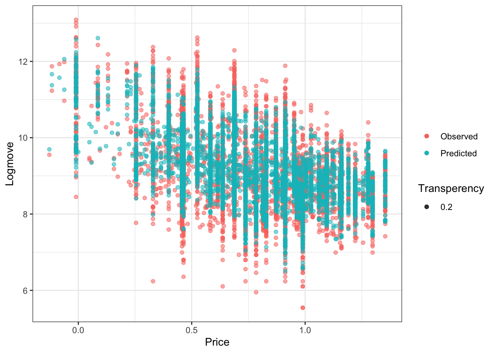
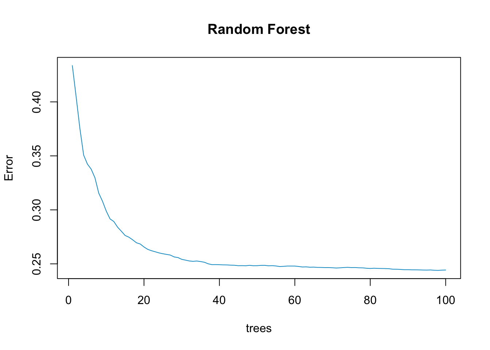

set.seed(487)
library(randomForest)
setwd("/Users/lesleyxu/Desktop/Past courses/23AU/ECON 487")
oj <- read.csv("oj.csv")
oj$price <- log(oj$price)
train <- sample(nrow(oj), 0.8 * nrow(oj))
oj_train_rf <- oj[train, ]
oj_test_rf <- oj[-train, ]
oj.rf <- randomForest(logmove ~ ., data = oj_train_rf, ntree = 100, keep.forest = TRUE)
oj_test_rf$pred_logmove_rf <- predict(oj.rf, oj_test_rf)
oj_test_rf$resid2 <- (oj_test_rf$logmove - oj_test_rf$pred_logmove_rf)^2HW6
- Estimate a random forest model and compare the MSE with the same LASSO model when predicting sales. Try to make a complicated model. Remember that you have to install the randomForest package.
- Here is some code:
mydata$price <- log(mydata$price)oj.rf <- randomForest(logmove ~ ., data = mydata, ntree = 100, keep.forest = TRUE)mydata$pred_logmove_rf = predict(oj.rf)mydata$resid2 <- (mydata$logmove - mydata$pred_logmove_rf)^2
- Try to plot observed versus predicted using ggplot.
library(ggplot2)
ggplot(oj_test_rf, aes(price, color = cond)) +
geom_point(aes(y = oj_test_rf$logmove, color = "Observed", alpha = 0.2)) +
geom_point(aes(y = oj_test_rf$pred_logmove_rf, color = "Predicted", alpha = 0.2)) +
labs(x = "Price", y = "Logmove", color = "", alpha = 'Transperency') +
theme_bw()
plot(oj.rf,
main = "Random Forest",
col = "deepskyblue3")
- Compare to your complicated LASSO model from the previous problem set for the MSE. Remember to hold out data so your random forest MSE is fair!
rf_mse <- round(mean(oj_test_rf$resid2), 2)The LASSO cv MSE is 0.36, and the random forest MSE is 0.25.
- We’re going to do some basic exploration with xgboost.
- Install the package xgboost and library it.
- Divide the data into a training set (80% of the data) and a hold-out set (20% of the data).
library(xgboost)
library(dplyr)
library(tidyverse)
library(broom)
oj_id <- oj %>%
mutate(id_val = row_number())
oj_train_xgb <- oj_id %>%
slice_sample(prop = .8)
oj_test_xgb <- oj_id %>%
anti_join(oj_train_xgb, by = 'id_val')- We’re going to train a model to predict logmove. To do this, we’re going to create a training and testing matrix that we can give to the package to do cross validation on.
- Use the xgb.DMatrix function to create a train and test matrix. This function takes arguments “data” (must be a matrix, so consider using the model.matrix command) and “label” (the outcome, logmove in our case).
lhs_vars <- oj %>%
select(-store, -week, -logmove, -price) %>%
colnames()
reg_str <- str_c('~ ', str_c(lhs_vars,collapse = ' + '))
train.X <- model.matrix(formula(reg_str), oj_train_xgb)
test.X <- model.matrix(formula(reg_str), oj_test_xgb)
train_matrix <- xgb.DMatrix(train.X, label = oj_train_xgb$logmove)
test_matrix <- xgb.DMatrix(test.X, label = oj_test_xgb$logmove)- Use the xgb.cv function to do 5-fold cross-validation on our training data. We’ll just use the defaults for most of the hyperparameters. A few useful arguments:
- nfold: number of folds for cross-validation
- nrounds: number of training rounds (generally, we want this to be a very large number since we don’t want to be artificially stopped short of achieving a minimum)
- early_stopping_rounds: if this argument is set, XGBoost will stop training if the testing error does not improve in whatever number the user puts here. This should be our stopping criterion (as opposed to hitting nrounds)
- print_every_n: if you set this to, say, 100, XGBoost will report its progress every 100 iterations, instead of each iteration.
- Important note: we’re not actually cross-validating or setting any of the hyperparameters that make XGBoost a powerful algorithm. If you’re curious about what other parameters you can set, inspect the documentation for this function or for the function xgboost.
train_xgb_cv <- xgb.cv(data = train_matrix,
nfold = 5,
nrounds = 10^4,
early_stopping_rounds = 100,
print_every_n = 100)[1] train-rmse:6.136050+0.002277 test-rmse:6.135684+0.011845
Multiple eval metrics are present. Will use test_rmse for early stopping.
Will train until test_rmse hasn't improved in 100 rounds.
[101] train-rmse:0.759861+0.001683 test-rmse:0.783134+0.006349
Stopping. Best iteration:
[22] train-rmse:0.762120+0.001482 test-rmse:0.779072+0.006403- Report the training RMSE (root mean squared error) and testing RMSE from the best model. How does this compare to previous models that we’ve used (remember that you should square this to get MSE)?
- The train-rmse from the best model is 0.763884+0.001398 and the test-rmse from the best model is 0.780964+0.005657. Comparing to the previous models, xgb.cv has a higher MSE of 0.61, which is worse.
- Use the xgboost function to train a model on the full training data using our one cross-validated hyperparameter (the number of training iterations). To do this, find the best iteration of the cross validated model and set that as nrounds for the xgboost function.
train_xgb_full <- xgboost(data = train_matrix,
nrounds = 22,
print_every_n = 10)[1] train-rmse:6.135748
[11] train-rmse:0.793102
[21] train-rmse:0.764581
[22] train-rmse:0.764360 - Use the predict command (the same way that we do in regression) and your testing xgb.DMatrix to assess the fit of the model on the held out data. How does the MSE compare to the MSE from cross-validation? How does it compare to prior models?
oj_test_xgb$pred_logmove_xgb <- predict(train_xgb_full, test_matrix)
oj_test_xgb$resid2 <- (oj_test_xgb$logmove - oj_test_xgb$pred_logmove_xgb)^2
xgb_mse <- round(mean(oj_test_xgb$resid2), 2)The MSE is 0.6. Compare to the cross-validation MSE, it is a little bit lower. Compare to the prior model MSE, it is higher because of less model complexity (did not include interaction terms).